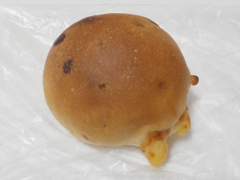
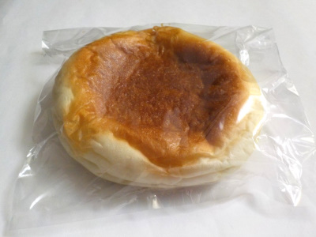
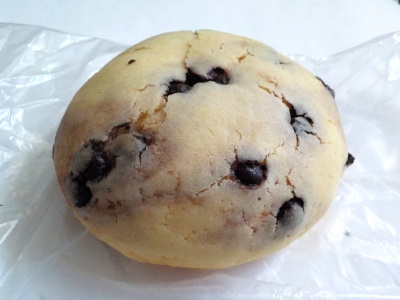

たろきちのチーズパン。
2023/12/27

小さくて丸くて立体的なチーズパン。中にもチーズが入っていますが、外にはみ出したチーズがコンガリ焼けておいしそうです。
ふわふわのパンではなく質量があるタイプなので、小さいわりに食べ応えがありました。
島根県出雲市知井宮町1197-1
2023/12/27

小さくて丸くて立体的なチーズパン。中にもチーズが入っていますが、外にはみ出したチーズがコンガリ焼けておいしそうです。
ふわふわのパンではなく質量があるタイプなので、小さいわりに食べ応えがありました。
2023/10/15

肉まんじゃなくて肉パンです。旨味たっぷりの肉まんの具が入ってました。
パンが薄いですが 、モチモチで噛み応えがありました。よく噛むのでちょっと満足感がありました。

見た目がハロウィンっぽいチョコチップメロンパンですね。時期的にピッタリです。
ふんわりとかザクザク系ではなく、キメの細かいパンで出来たメロンパンでした。甘いパンが美味しかったです。
メロンパンはこのタイプが好きだなと思いました。